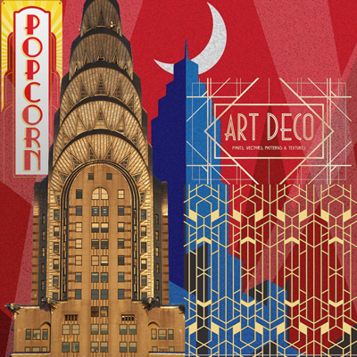
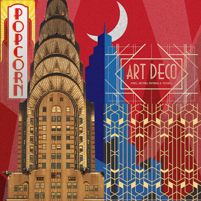
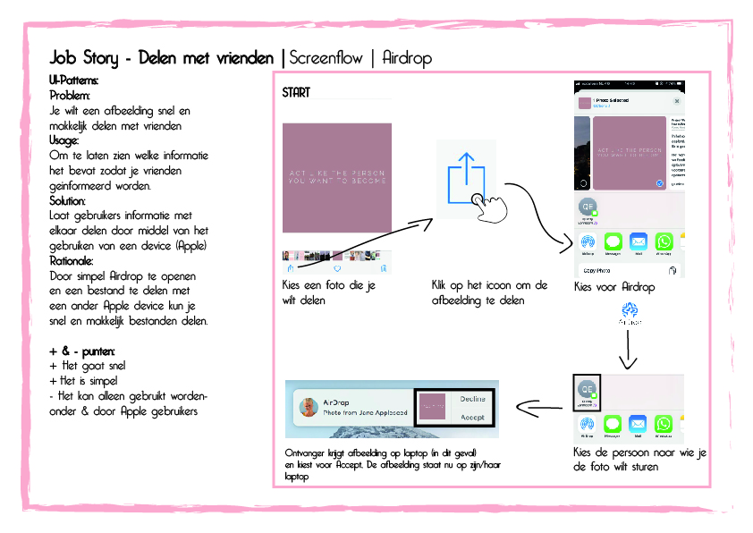
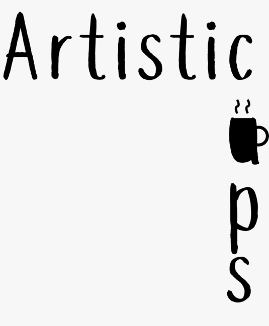
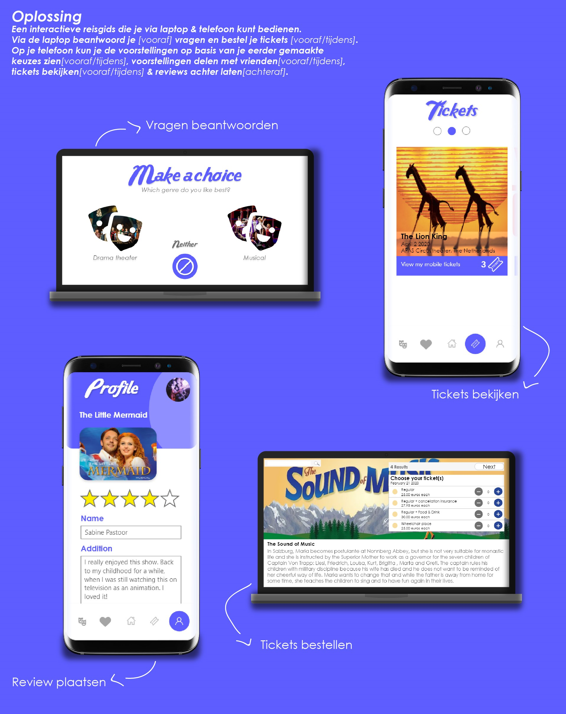

Vormgeving [Propeduese jaar | Blok 2]
Verdiepen in ontwerpstijlen en daarmee een ontwerp maken voor een one-pager.
Verdiepen in ontwerpstijlen en daarmee een ontwerp maken voor een one-pager.
Design patterns effectief in te leren zetten in je ontwerpproces en het maken van wireflows.
Methoden en technieken leren gebruiken voor ideeontwikkeling en om ontwerpkeuzes te onderbouwen.
Online interactieve reisgids ontwerpen met een multi-device experience.
Case-study schrijven over een app/website en een idee bedenken om deze te verbeteren op basis van verslaving.

Het verbeteren van slaap voor een specifiek gekozen doelgroep en hier een fysiek product voor uitwerken.